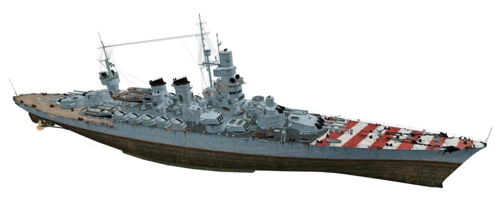
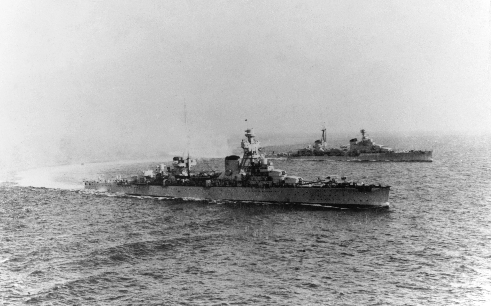
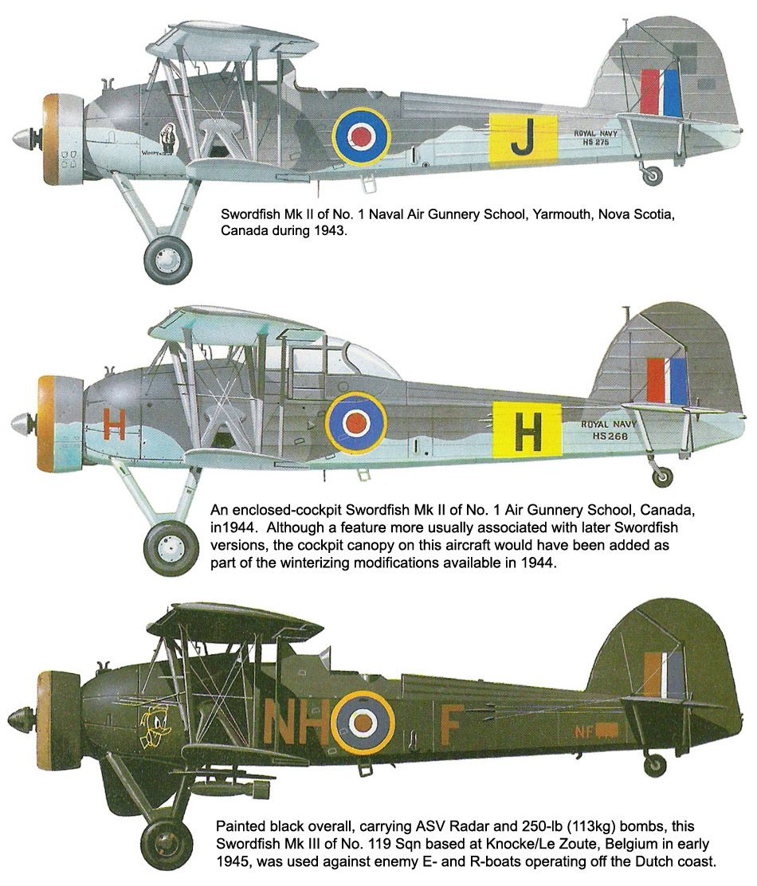

WW2 중 항모에서의 야간 작전 (23) - 희비가 교차하는 어뢰와 폭탄
게시: 2025-07-24T11:42:37+09:00
<유도 미쓸보다 낫다!> 윌리엄슨과 스칼렛의 선두 Swordfish의 뒤를 따르던 2대의 소드피쉬는 모두 동일한 목표, 즉 전함 Cavour를 향해 어뢰를 투하. 그들이 어뢰를 투하하는 중에 카부르에 폭발이 일어나는 것을 목격. 즉, 윌리엄슨과 스칼렛이 투하한 어뢰가 카부르에 명중했던 것. 이들은 어뢰 투하 직후 180도 선회하여 바다 쪽으로 도주. 따라서 이들은 자신들의 어뢰가 카부르에 명중했는지 여부는 알지 못했음. 사실 관심도 그다지 많지 않았을 듯. 쏟아지는 대공포화를 피하느라(?) 정신이 없었던 것. 실은 피한다기 보다는 최대한 낮게 비행하면서 기도하는 것 외에는 방법이 없었는데, 전에 언급한 이유로 이탈리아 대공포들은 이들의 머리 위로 모두 지나갔으므로 이들은 대공포에 맞지 않고 탈출에 성공. 이들이 투하한 어뢰 2방은 어떻게 되었을까? 카부르의 더 북동쪽 뒤에 있던 전함 Andrea Doria는 조금 후인 23시 15분에 두 차례의 큰 폭발이 근처에서 목격되었다고 보고. 이는 틀림없이 그 어뢰 2방이 최대 사거리까지 헤엄쳐 나간 뒤 설정에 따라 자폭한 것. 즉, 윌리엄슨이 이끈 3대 중 윌리엄슨 자신의 어뢰만 명중한 셈.

(이탈리아 전함 Andrea Doria (2만7천톤, 21노트)는 1913년 진수된 구형 전함이었으나 1937년~1940년에 걸쳐 현대화 작업을 완료. 이탈리아 전함들 및 대형 순양함의 특징 중 하나는 저 갑판에 그려진 빨간색과 하얀색의 줄무늬. 저건 WW2 개전 이후에야 도입된 것으로서, 피아를 구분하여 아군의 오폭을 피하기 위한 것이 주목적. 특히 이탈리아 해군은 지중해에서 활발히 활동하던 독일 공군으로부터의 오폭을 매우 우려했다고. 다만 전함이나 순양함에 대한 실제 오폭 사례는 거의 없었던 듯.) 이렇게 빗나간 어뢰 2방이 헛되어 폭발하던 23시 15분, 구름 속에서 편대와 흩어지는 바람에 타란토에 15분 먼저 도착하여 이탈리아 해군에게 '영국놈들이 몰려온다'라고 미리 알려주는데 혁혁한 공(?)을 세웠던 Ian Swain 대위의 소드피쉬가 타란토 항구 방파제를 넘고 있었음. 동료들이 도착하여 조명탄이 투하되고 이탈리아 대공포들이 불을 뿜자, 지금이 적절한 때라고 판단했던 것. 스웨인은 윌리엄슨의 편대와 약간 다른 방향에서 돌입했으므로, 그렇게 달려드는 스웨인의 눈에 들어온 전함은 카부르가 아니라 더 크고 더 최신함인 전함 Littorio. 위에서 빗나간 어뢰를 투하했던 소드피쉬들과는 달리, 스웨인은 리토리오에서 불과 360m 떨어진 곳에서 어뢰를 투하. 이건 일부러 그런 것은 아니고 대공포화와 조명탄 불빛을 배경으로 갑자기 눈 앞에 리토리오의 거대한 함체가 들어왔기 때문에 그렇게 된 것. 그러다보니 다른 소드피쉬들과는 달리 스웨인은 어뢰 투하 이후 180도 선회할 공간을 갖지 못했고, 어쩔 수 없이 조종간을 당기며 그대로 나아가 리토리오의 2개 마스트 사이를 통과. 매우 가까운 상태에서 투하된 이 어뢰는 빗나가지 않고 그대로 리토리오의 좌현에 명중, 폭발. 그와 동시에 마침 반대편에서도 리토리오의 우현 선수부에 어뢰가 명중, 폭발. 이는 더 북쪽에서 침투하여 남쪽으로 선회하며 목표물을 찾던 Kemp 대위의 소드피쉬가 투하했던 어뢰. 켐프와 함께 날며 거의 동시에 어뢰를 투하했던 Maund 대위의 어뢰는 빗나갔고 폭발도 보고된 바 없었음. 계속 나아가다 결국 항만 바닥의 진흙에 쳐박힌 것.

결국 1차 공격대 중 어뢰를 장착한 소드피쉬 6대는 모두 성공적으로 6발의 어뢰를 투하. 그 중 3발이 명중되었으니 명중률은 50%. 이건 굉장한 성과. 아마 현대의 유도 미쓸로도 (방어측의 요격 미쓸과 재밍, 플레어 등의 방해 수단이 있으니) 이 정도 성과는 못 낼 듯. <실망스러운 폭탄> 어뢰조가 이렇게 혁혁한 전과를 올리는 동안, 폭탄을 장착한 소드피쉬 4대의 활약은 다소 실망스러웠음. 아무래도 급강하 폭격의 명중률이, 정지 상태의 목표물에 대한 어뢰 명중률보다는 크게 떨어지는데다, 이탈리아 대공포 사격이 저공비행하는 어뢰조에 대해서는 소극적일 수 밖에 없었으나 고공의 폭탄조에 대해서는 더욱 맹렬했기 때문이기도 했으나... 가장 큰 문제는 목표물 확인. 어뢰조가 타란토의 큰 항구 Mar Grande의 전함들을 노리는 동안, 폭탄조는 작은 항구인 Mar Piccolo의 순양함들을 노렸는데, 마르 피콜로의 부두에는 순양함과 구축함들이 빽빽히 들어차 있었음. 따라서 이걸 놓친다는 것은 매우 이상한 일. 그런데도 놓쳤음. 이유는?

(다시 보는 타란토 항구의 구조. 아래에는 전함들이 계류된 마르 그란데가 있고 위쪽에 순양함들과 구축함들이 정박한 마르 피콜로의 일부가 보임.)

(구축함 순양함이 빽빽히 정박한 마르 피콜로의 부두. 이건 WW2 발발 이전 1930년대의 모습.)

(타란토 공습 직전 영국공군 정찰기가 찍어온 마르 피콜로의 모습. 역시 부두에 군함들이 빽빽히 정박된 모습이 보임.) 일단 폭탄조에게 주어진 목표물은 그냥 아무 순양함과 구축함이 아니라 큼직한 중순양함. 그리고 이 중순양함들은 부두에 정박한 것이 아니라 마르 그란데의 전함들처럼 항구 바다 가운데에 계류되어 있었음. 따라서 그냥 물 반 군함 반인 부두가 아니라 중순양함을 노리는 것은 쉬운 일이 아니었음.

(당시 폭탄조 소드피쉬들에게 목표물로 주어졌던 중순양함 Trento (전방)와 Bolzano (후방). 두 척 모두 1만3천톤, 35노트.) 폭탄조 중 처음으로 돌입한 Patch 대위는 2.5km 상공에서 배회하다 대공포를 쏘아대는 중순양함 Trieste와 Trento, Bolzano의 모습을 확인하고 급강하하여 폭탄을 투하. 이 폭탄들 중 하나에는 이탈리아군을 모욕하기 위한 영국군 군화가 묶여져 있었으나... 빗나감. 팻치 대위의 소드피쉬는 맹렬한 대공포화 속에서 타란토 항구 건물들의 지붕을 아슬아슬하게 스치듯 지나며 빠져나옴.

(소드피쉬에는 어뢰 뿐만 아니라 폭탄과 폭뢰 등 다양한 무장이 가능. 타란토 공습에서 폭탄조의 소드피쉬들은 날개 한 쪽에 250파운드짜리 폭탄 3발씩, 총 6발씩을 장착.)
그런데 이 중순양함들의 함장들도 나름 똑똑했음. 이들은 곧 영국 폭격기가 자신들이 쏘아대는 대공포 예광탄을 보고 자신들의 위치를 파악한다는 것을 재빨리 알아챔. 전에도 언급했지만, 원래 타란토 항구 이탈리아 해군의 지침도 '직접 공격받는 것이 아니라면 군함에서 대공포 사격은 자제할 것'이었는데, 그게 다 이유가 있었던 것. 이 중순양함들은 곧 대공포 사격을 중단했고, 항구 가운데의 어둠 속에 숨겨져 버림. 결국 뒤를 따르던 소드피쉬들은 목표물을 찾지 못하고 약간 망설이다 제2 목표물인 수상정 기지를 공격하여 일부 피해를 입히기도 하고, 경순양함과 구축함들이 빽뺵히 정박한 부두에 폭탄을 투하하기도. 그렇게 투하된 폭탄 중 한 발은 구축함 Libeccio의 얇은 함체를 뚫고 들어갔는데... 불행히도 격발되지 않아 불발탄이 됨. 그날 밤 투하된 많은 폭탄들이 불발탄으로서 폭발하지 않았음.